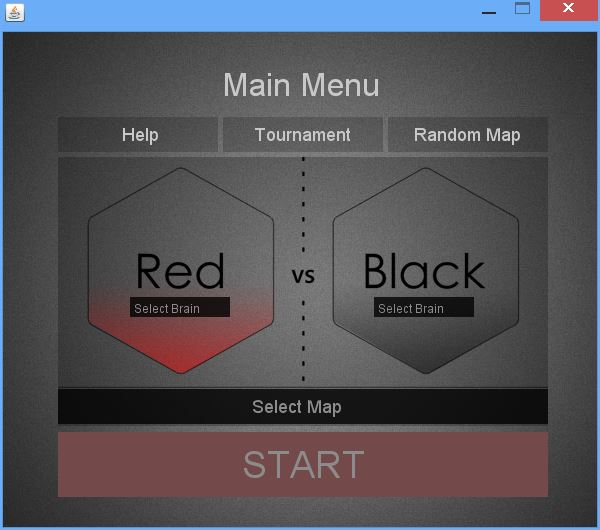
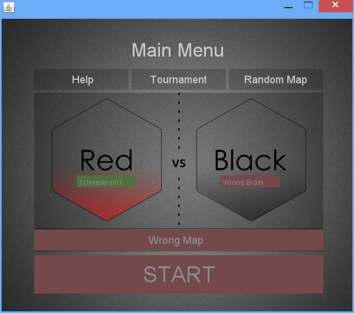
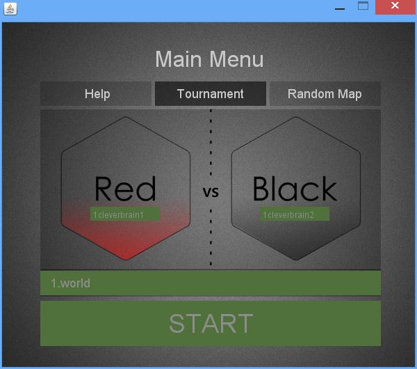
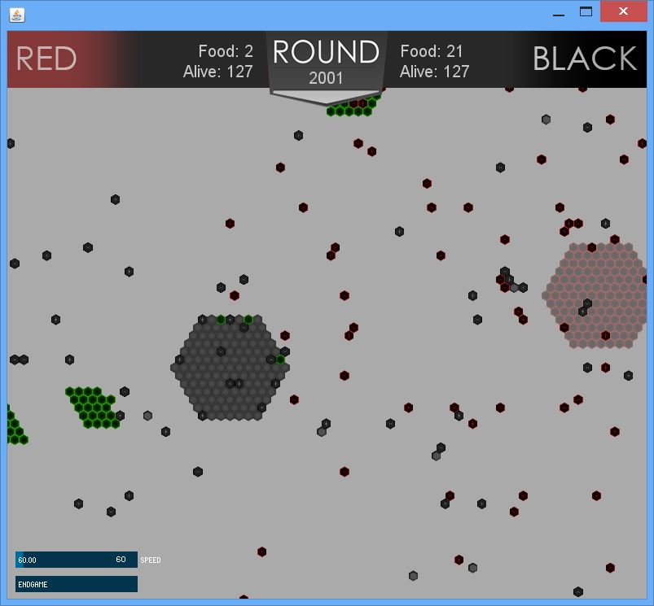
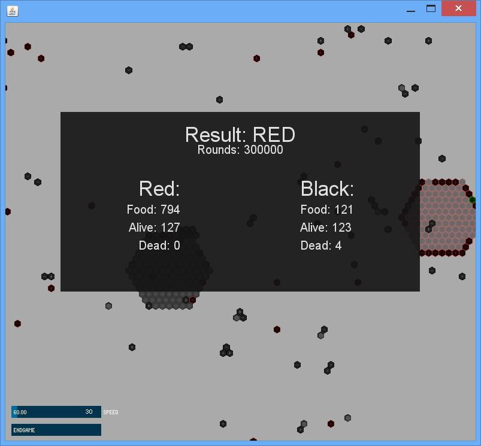
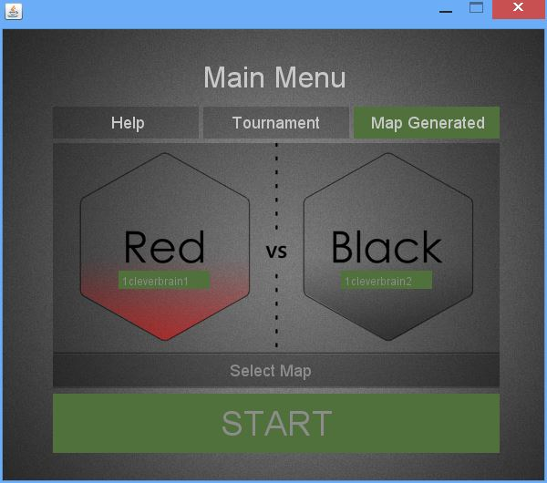
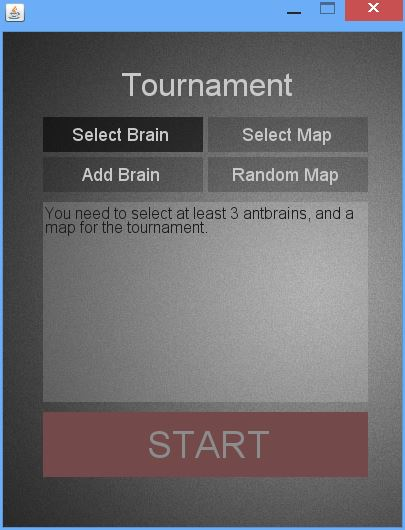
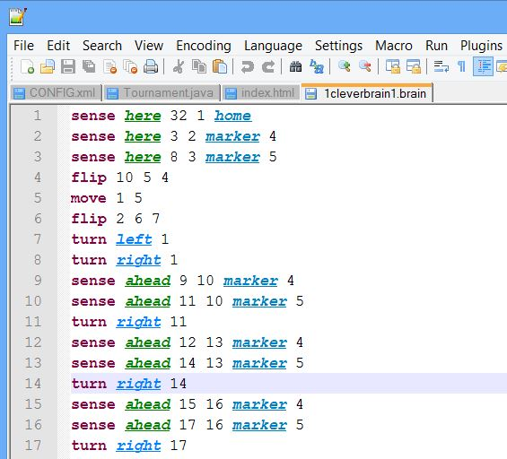
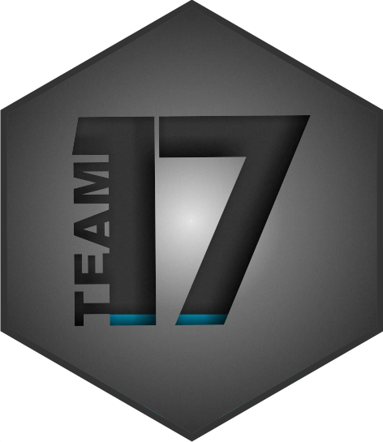

Welcome! We're glad you're here, We've been waiting for you. Spend a few minutes going through this guide to learn some AntGameSimulator basics. We will introduce you to a number of useful tutorials, such as how to use the simulator and how to make your own ant brain to battle the legendary ant brains.
The simulator comes with several files, in the brains and world directories you will find some examples of the brains and world files. In the extra folder you will find two files to aid you in creation of ant brains and maps, which are covered in later sections. To lauch the simulator open the antgame.jar file.
Let's get started, first launch the simulator. You should have a
window open as shown below.

Here we have our main menu, on top there are three buttons, Help, Tournament and Random Map. Functions of each is covered in the next section.
In the middle section, you can see two hexagons, one for the Red team
and one for the Black team. In the middle of each hexagon are
buttons to select brains for the team. Once you press the select
brain button a file picker will launch, pick any file and see what
happens. If you picked a non-ant brain file, the button becomes red,
indicating the file does not meet the standard ant brain format. If
it is an acceptable format the button will become green. You can see
examples of both cases in the screenshot below:
 Now try
selecting a valid ant brain (Hint: You can find one in the brains
folder provided with the game).
In the bottom section, there are two buttons, Select Map and Start.
Select Map button works in a similar manner as the select brains
buttons, it becomes green with the correctly formated map, red with an invalid
map. The start button can be activated only when there is a valid
map and two valid ant brains. Only then does the button becomes green
allowing you to start the simulator. Try inserting two valid brains
and a valid map and press start to see the simulation. The screenshot
below shows how your main menu should look if you input all
valid files.

Once you press start, another window will pop up with the simulation.
To pan around the map left click and move your mouse. To zoom in use
your mouse wheel, alternatively you can use right button of the mouse
(Warning, very sensitive zooming with the mouse). You can also resize
the window to increase your view of the world. 
The green hexagons represent food cells, black hexagons with lines inside are black ants.
Red ants are the dark red hexagons with lines inside. The ant hills are pale version of ant
heaxgons. Rocks are represented as a beveled hexagon.
There are only two controllers in the simulator view, on the left corner. Firstly we have a Speed slider, which lets the user control the frame rate of the simulation, the maximum speed depends on the hardware in use. Try dragging it to the right, did you notice how much faster everything started moving? End game button, stops the current simulation and processes the rest of the simulation without visualisation. This drastically reduces waiting time for the result of the simulation. You can not do anything to the window during this process, please wait for the result. Once the simulation is done processing, you will see a results window as shown below. 
The random map feature allows the user to create a map on the fly without
needing to create and load a map. Every random map is generated in a
manner which fulfils all the map requirements, such as number of
food particles per cell and ant hill size (details are covered in the
Making a Map Section).
To generate a map simply
press the Random Map button, when a successful map is created it will
become green. If you change your mind, you can still select a map
file. The screenshot below shows how the screen will look when a map is
generated. 
The tournament mode allows you to pit an arbitrary number of brains
against each other. You need at least three ant brains in order to
create a tournament.
To create a tournament,
simply press the Tournament button in the main menu. A new window
will pop up as shown below.  The Tournament menu works in similar
fashion as the main menu. To add a brain, first select a brain, if it
is a valid brain, the button will become green. Then you can add the
brain to the list of brains in the tournament by pressing the add
brain. Remember, you need at least 3 ant brains.
Selecting the map works in exactly the same way as it does
in the main menu. You can pick one yourself or generate a random map.
Once three ant brains or more are added to the list, and a
map is selected/generated the start button will become green and
allow you to start the tournament.
During the tournament, each pair of submissions is pitted against each other twice, once with the first submission playing red and the second black, and once with the first playing black and the second red. A submission gains 2 points for each game it wins, and 1 point for each draw. The submission with the most points wins the tournament. If there is no clear winner, the tournament is repeated with a certain number of finalist submissions.
Every ant brain has to follow a specific file format. The concrete format of these files are as follows:
There are a total of 8 types of instructions and here is their breakdown:
Sense sensedir st1 st2 cond
Go to state st1 if condition cond in direction sensedir is true,
else go to state st2. As previously stated, you can sense 4
directions, here, ahead, left ahead and right ahead. For a full list
of conditions, refer to the previous section.
Mark x st
Set mark x in the
current cell, and go to the state st. Every team has 6 markers.
Therefore x can be 0,1,2,3,4,5.
Unmark x st
Clear mark x in
the current cell, and go to the state st.
PickUp st1 st2
Pick up food
from the current cell and go to the state st1, if there is no food
in the current cell go to the state st2.
Drop st
Drop food and go to
the state st.
Turn lr st
Turn to the
direction lr and go to the state st. lr can be right or left.
Move st1 st2
Move forward and
go to the state st1, if the cell ahead is blocked go to the state
st2.
Flip p st1 st2
Flip is used
to make ant movement more random. A random number is generated
between 0 to p-1, if the number generated is 0 the ant goes to the
state st1, else to st2.
An ant brain can be created using any text editing tool. If you are
using Windows, you can use the default text editor Notepad to
create an ant brain.
To save the ant brain just
save the text file. The ending format of the file does not matter,
but for asthetic purposes you can change it to .brain
In the extra folder provided with the simulator, there is
an antBrain_language.xml file,
which you can import into NotePad++ text editor. This will aid you
in creating an ant brain, instead of seeing just plain text, tokens
are highlighted according to their category as shown below. 
Now, we know all the rules of making an ant brain and have all the tools, let's make one. We will make an ant brain which randomly walks around until it finds some food, then randomly walks until it reaches home to drop the food and repeats the whole process again.
Just like the Ant Brain files, the map file has it's own syntax and rules. Systax of the map file as follows:
The possible cell specifiers are:
# rocky cell
. clear cell (containing nothing interesting)
+ red anthill cell
- black anthill cell
1 to 9 clear cell containing the given number of food particles
Hint: In the extra folder there is an XML file for the NotePad++ Hint2: Just generate a random map.
